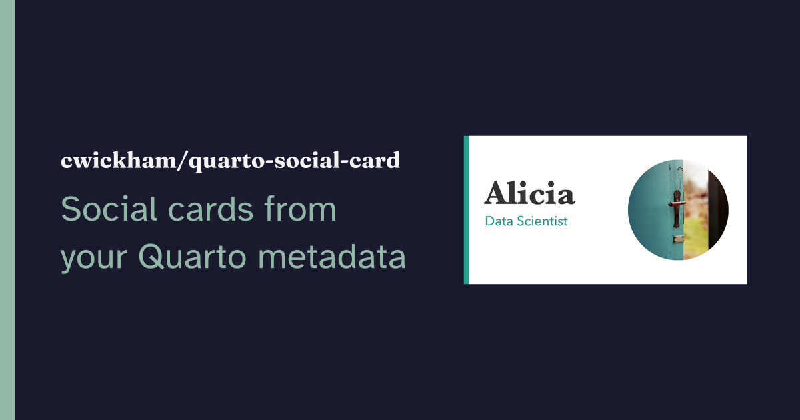

quarto-social-card
A Quarto Typst format that renders an Open Graph social card (1200×630 PNG) from a document’s metadata — title, subtitle, image — styled with your project’s _brand.yml colors and fonts.

Usage
Add the extension to your project:
quarto add cwickham/quarto-social-cardCreate a _thumbnail.qmd with your card’s content. The leading _ keeps it out of the rendered site; colors and fonts come from your _brand.yml:
---
title: "Alicia"
subtitle: "Data Scientist"
image: profile.jpg
format:
social-card-typst: default
---Render it — this leaves a .typ next to the PDF:
quarto render _thumbnail.qmdThen rasterize that .typ to a 1200×630 PNG:
quarto typst compile _thumbnail.typ thumbnail.png --font-path .quarto/typst/fonts --ppi 144(The --font-path lets the card use brand fonts that quarto render downloaded; it’s harmless if your brand uses only system fonts.)
Wire the card into _quarto.yml as your site’s social image. Add image-alt so the card is accessible:
website:
open-graph: true
image: thumbnail.png
image-alt: "Alicia, Data Scientist" # the card's text, for screen readersRe-run the two render commands whenever the content or brand changes.
For overriding the brand on a single card, or making cards from existing pages, see More ways to use it.
More ways to use it
Change the image shape
By default the image is shown as a rectangle at its natural aspect ratio. Set image-shape to round (circle crop) or rounded (rounded corners), mirroring Quarto’s about template:
image: profile.jpg
image-shape: round # round | rounded | rectangle (default)Override the brand for one card
To give a card different colors or fonts, add a brand block to its front matter. Note that a document-level brand replaces the project _brand.yml rather than extending it, so respecify everything you want — including typography, or the card falls back to Typst’s default font:
---
title: "Alicia"
subtitle: "Data Scientist"
image: profile.jpg
brand:
color:
background: "#1a1a2e"
foreground: "#ffffff"
primary: "#e94560"
typography:
base:
family: "Avenir Next"
headings:
family: "Baskerville"
format:
social-card-typst: default
---When rendering the card, Typst only loads a variable font’s default (usually light) instance, so bold titles render thin. List the weights you need in the font entry so Quarto fetches real static faces:
typography:
fonts:
- family: Fraunces
source: google
weight: [400, 700](The HTML site is unaffected — browsers handle variable fonts natively.)
Use a brand’s dark mode
If your _brand.yml defines light and dark variants, the card uses the light mode by default — a card is a static image, so it has no automatic dark mode. Set brand-mode: dark in the card’s front matter to render the dark variant:
title: "Alicia"
brand-mode: dark
format:
social-card-typst: defaultAdd a card to an existing page
Instead of a dedicated _thumbnail.qmd, you can add the format to any page alongside its normal output:
format:
html: default
social-card-typst: defaultRendering produces both the HTML page and the card (page.typ → page.pdf):
quarto render page.qmdRasterize the kept page.typ to a PNG, named to match what you reference below:
quarto typst compile page.typ page-card.png --font-path .quarto/typst/fonts --ppi 144The card uses that page’s title / subtitle / image, and the page body is ignored — only the metadata reaches the card.
Then point the page’s social image at the generated card. By default, Quarto uses the page’s image: (the card’s avatar) as the og:image, so set it explicitly under open-graph (and twitter-card):
image: profile.jpg # shown on the social card, listings and about template
open-graph:
image: page-card.png # the generated card
image-alt: "Alicia, Data Scientist" # the card's text, for screen readers
twitter-card:
image: page-card.png
image-alt: "Alicia, Data Scientist" # the card's text, for screen readersBe aware that the PDF card, e.g. page.pdf, is published into _site/. Consider deleting it, or using a post-render script to remove it.